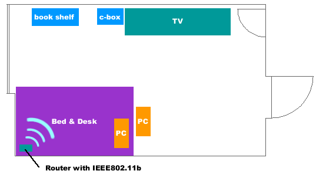

インターネット概論 第2回課題
松倉 友樹
課題内容
●引き込み回線をどうするのか？
FTTH
xDSL
CATV
●家庭内の引き回し
無線LAN
cat-5（LANケーブル）
●サービスの導入
VoIP
DHCP
※課題レビュー時に名前を出して欲しくない方は、明記してください。
現状
機材
- ルーター （http://www.planex.co.jp/product/broadlanner/blw03fa.shtml）
パラレルポートプリンタサーバ内蔵・IEEE802.11b内蔵・PPPoE - ハブ
8ポートスイッチングハブ - コンピュータ（PenIV 1.5GHz）
- コンピュータ（Celeron 800Mhz）
- ラップトップコンピュータ（PenIII 700Mhz）
配置

2台のPCへはCat5のEthernetにて接続。ラップトップクライアントは主にIEEE802.11bで通信。
サービス
- FTTH （NTT東日本 Bフレッツ ニューファミリータイプ）
- プロバイダー （ドルフィンインターネット 固定IPアドレス1つ）
考察
去年初めまで、Bフレッツのベーシック、プロバイダーはIIJ mioの固定IP接続を使用していたが、家にあまりいなく、維持費が月に2万円かかるので、上記のようなサービスに変更し、月1万円弱で運用している。
あちこちのWebサイトでインターネット回線のベンチマーク結果が公表されている。そことこの環境を比較してみたら、圧倒的に遅い。NTT東日本同サービスで40Mbpsぐらいはでているのだが、この環境では10Mbps程度。おそらくルーターがボトルネックになっていると思われる。仕様に書いてあるスループットは65Mbpsとなっており買った当時は最速だった。しかし、ルータのフィルタリング機能などを用いていることによりかなりの速度低下が起こっているようだ。
また、IEEE802.11bの通信がラップトップコンピュータのボトルネックになっている。128bitの暗号化をして通信をしている生だと思われる。3Mbps程度しかでない。重いファイルの転送や、別のコンピュータへのバックアップの際はEthernetを用いている。
構築案
方針
マネジメントフィーは大きい。今回の課題では金銭的な額にふれられていないのでこう仮定する。
自分が運用費をだすが、 構築費は宝くじが当たったとして10万円を限度として考えてみる。
無線LANの遅さには困ってしまう。現在のルーターではMacアドレスによるフィルタリングが不可能なため、128bitの暗号化するキーを使うことによってほかの住民による不正使用を防いでいる。よって、新しい無線LAN基地局が必要。
IEEE802.11a,gなどの高速転送が可能な規格もあるがラップトップ内蔵の無線LANモジュールを使用していて、カードを指すのが面倒なのでIEEE802.11bを使用する。
ルータの速度が遅いのでルータを定評のある高速な機器に入れ替える。
家のインターネット環境にはそこそこお金をかけているのでこの程度のグレードアップを図りたい。
必要機材
| 製品写真 | 詳細 | 金額 (kakaku.com) |
 |
■ルーター http://review.ascii24.com/db/review/peri/ta_router/2001/08/02/628332-005.html |
16,000円 |
 |
■アクセスポイント 無線LANアクセスポイントで定評のあるメルコを採用。IEEE802.11b,g接続ができるため今後活躍するかもしれない。 |
12,000円 |
| 金額合計：28,000円 | ||
考察
現状、家のネットワーク環境に問題はないため、上記2機種の購入だけとなる。VoIPも、携帯電話があるから必要なく、光ファイバも満足している。